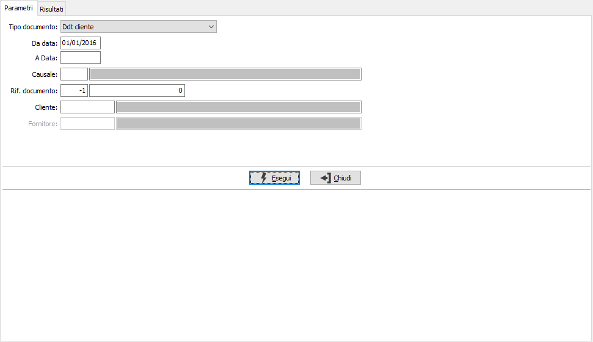
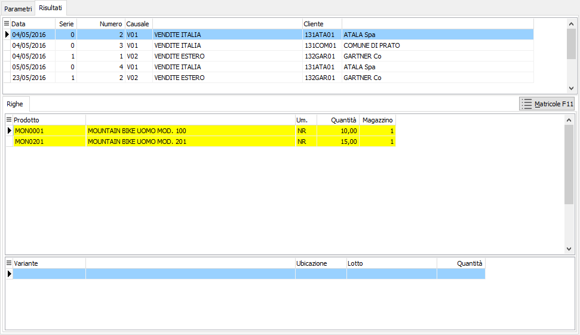

Assegnazione matricole
La procedura consente di gestire il dettaglio matricole di singoli documenti/movimenti o gruppi omogenei di documenti/movimenti.
Normalmente i documenti/movimenti devono essere completati specificando tutte le matricole prima del salvataggio; tuttavia esistono delle condizioni per cui è possibile che un documento/movimento nasca senza matricole (ad esempio i versamenti generati in automatico dagli eventi o i buoni di prelievo generati in automatico) ed è necessario agire successivamente; oppure per modificare le matricole (ad esempio su documenti non più modificabili).
Viene richiesto il tipo documento da gestire ed una serie di parametri relativi alla selezione dei singoli documenti/movimenti.

Nella pagina risultati saranno mostrati in griglia teste, righe e dettagli documento/movimento e per ognuno sarà possibile modificare, eliminare o assegnare le matricole tramite il pulsante Matricole che accede alla finestra di assegnazione massiva matricole.
